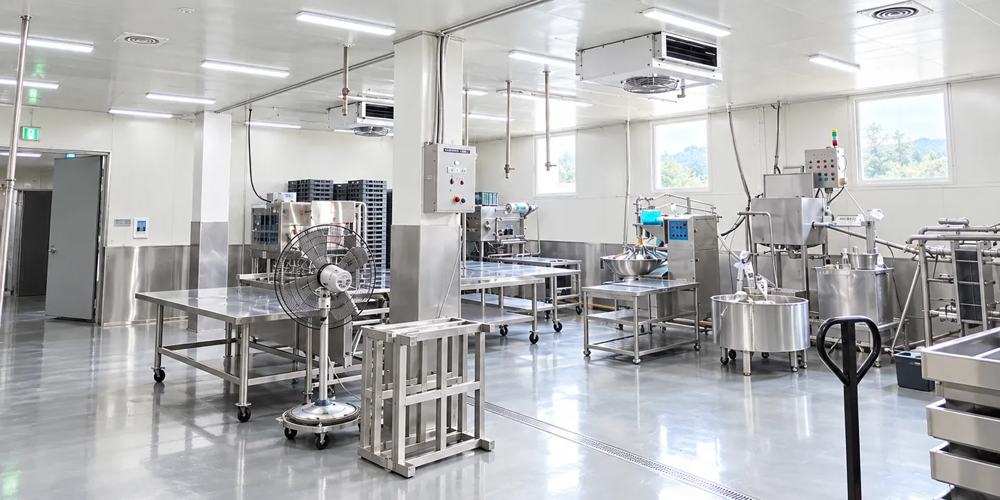
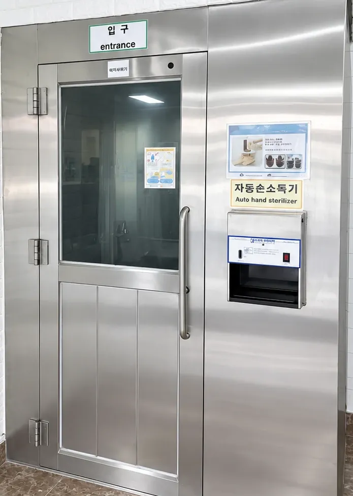

생산시설
포천 공장의 생산실과 두부를 만드는 방법을 소개합니다.

만드는 방법
알찬식품 두부를 만드는 주요 단계입니다.
생콩 갈기
콩을 불리지 않고 생콩을 그대로 갑니다. 콩을 불리는 동안 물에 녹아 나오는 영양분을 줄이기 위해서입니다.
농축하기
콩물을 진공 상태에서 낮은 온도로 농축해 진하게 만듭니다(진공저온 농축공법).
굳히기
진한 콩물을 보자기에 싸서 누르지 않고 틀에서 굳힙니다.
자르고 담기
쓰임에 맞는 크기로 잘라 용기에 담습니다.
생산실 입구

생산실 입구에는 자동 손소독기와 에어샤워기가 있습니다.
두부 납품과 OEM 생산 문의는 전화로 받습니다.
납품 문의